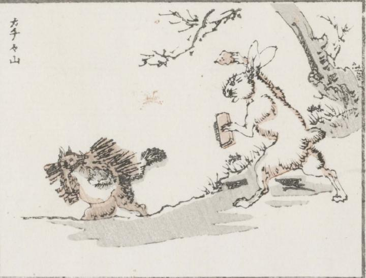

狸；タヌキ，兎；ウサギ

木の枝の束を背負った狸を、白い兎が追いかけている。兎の手には火打石と火打鎌らしきものが握られている。
著作者：牧墨僊／出典：親書誌：U426_nichibunken_0097：滑稽洒落狂画苑；コッケイシャレキョウガエン／日付：2007／資源識別子：U426_nichibunken_0097_0034_0000
Copyright (c)2010- International Research Center for Japanese Studies, Kyoto, Japan. All rights reserved.